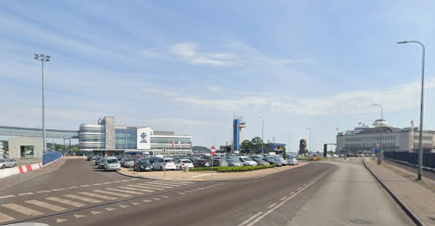
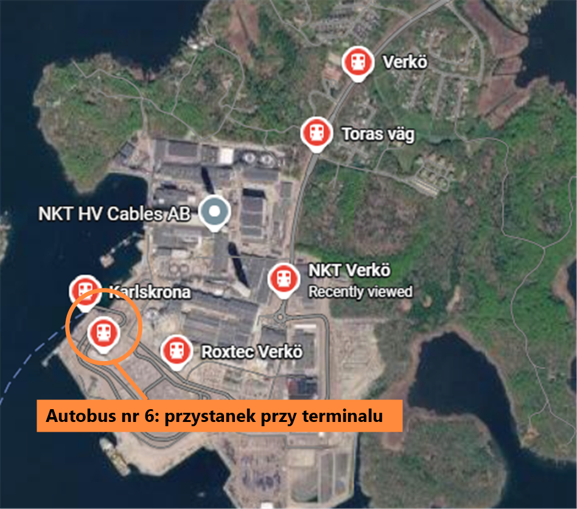

Plan dnia
Cała trasa w Google Maps-
noc
Zmiana czasu na zimowy
W nocy 24/25.10 cofamy zegarki o godzinę. Wszystkie godziny poniżej są już w czasie zimowym. Zachód słońca w Gdyni ok. 16:15.
-
10:00
Wyjazd z Warszawy
Trasa S7, ok. 4–4,5 h jazdy.
-
14:30

Parking pod terminalem
Publiczny Terminal Promowy, ul. Polska 4. Bagaż na prom zostaje w aucie.
-
15:00

Kamienna Góra
Kolejka na punkt widokowy, ok. 40 min. Z parkingu ok. 1,5–2 km, ok. 25 min pieszo. Autobusy 133 i 119 (przystanek Dworzec Morski – Muzeum Emigracji) z/do Gdynia Główna, taksówka 10–15 min.
-
15:45

Akwarium Gdyńskie
Z Kamiennej Góry kilka minut spacerem wzdłuż nabrzeża. Po drodze miniesz ORP Błyskawicę, wystarczy obejrzeć ją z zewnątrz (bez wchodzenia).
Czynne do 17:00. Priorytet dnia: zaplanowane ok. 1 h 15 min, do zamknięcia o 17:00. Dojdź na kolację ok. 17:30.
-
17:30
Kolacja: Pierogarnia Mandu
Pierogarnia Mandu, Gdynia Śródmieście.
Godziny z katalogu: 12:00–21:00 (pt, sob do 22:00). Przed wyjściem sprawdź w Google Maps, czy w niedzielę 25.10 jest otwarte i jakie są ceny.
-
19:30
Powrót pod terminal
Pieszo ok. 30 min, autobusem 133 lub 119 albo taksówką. Zabierz bagaż z auta.
-
20:15
Odprawa
Kasy Stena Line otwierają się o 20:00. Na pokład wpuszczają niecałą godzinę przed rejsem. W terminalu tylko automaty z kawą.
-
22:00

Wypłynięcie do Karlskrony
Prom Stena Spirit, przypłynięcie do Karlskrony w poniedziałek 26.10 o 08:30. Powrót: Stena Ebba z Karlskrony 26.10 o 20:00, w Gdyni we wtorek 27.10 o 06:00.
-
alt.

Alternatywa: Muzeum Emigracji
W niedzielę czynne 10–18, ostatnie wejście 17:00. Tuż przy terminalu (ul. Polska 1). Jeśli zamiast statków, to od razu po zaparkowaniu.


Plan dnia: poniedziałek 26 października
Prom Stena Spirit przypływa o 08:30, a Stena Ebba wypływa o 20:00. Pogoda ma być słaba, więc plan stawia na wnętrza. Szwecja ma ten sam czas co Polska.
-
08:30

Przypłynięcie do Karlskrony
Terminal Stena Line jest na wyspie Verkö, ok. 10 km od centrum. Działa pon–śr 06:00–22:00, ma poczekalnię, wi-fi, automaty i przechowalnię bagażu (sprawdź na miejscu, czy jest czynna).
-
09:15

Dojazd do centrum: autobus nr 6
Przystanek zaznaczony na mapie, tuż przy terminalu. Jazda do centrum ok. 30 min.
Bilet: aplikacja Blekingetrafiken, bilet 24-godzinny (64 SEK od osoby), albo jednorazowy (32 SEK, ważny 60 min). Kup przed wejściem do autobusu. Plan B: automat biletowy w terminalu (płatność kartą).
-
10:00

Stortorget i stare miasto
Centralny plac z kościołami Fredrikskyrkan i Amiralitetskyrkan. Miasto jest na liście UNESCO. Godzin otwarcia kościołów nie sprawdzałem, więc wejście do środka traktuj jako bonus. W dniach 24.10–1.11 trwa w Karlskronie festiwal światowego dziedzictwa (program sprawdź na visitkarlskrona.se).
-
10:45
.jpg?width=640)
Björkholmen: dzielnica drewnianych domów
Ok. 200 zabytkowych domów z XVIII i XIX w., wciąż zamieszkałych, w dzielnicy chronionej jako środowisko kulturowe. W pobliżu stoi też Amiralitetskyrkan, według przewodników największa drewniana budowla w Szwecji. Spacer pieszo z centrum, dojście przez Hantverkargatan.
-
11:30

Wyspa Aspö: Drottningskär
Bezpłatny prom z Handelshamnen (port handlowy), ok. 25 min w jedną stronę. Na wyspie spacer 10–20 min od przystani do Drottningskärs kastell (cytadela z XVII w., UNESCO), plus przyroda i widoki na archipelag, jeśli pogoda się poprawi.
Poniedziałkowego rozkładu nie potwierdziłem (strona aspofarjan.se pokazywała tylko niedzielę 25.10, kursy ok. co 70–90 min). Sprawdź rozkład i godzinę ostatniego powrotu. Kawiarnia i muzeum przy kastellu działają głównie latem, a rezerwatu przyrody na Aspö nie udało mi się potwierdzić.
-
alt.

Rezerwat Skärva (zamiast Aspö)
Rezerwat przyrody 230 ha (160 ha lądu) koło Nättraby, pod ochroną od 1995 r. Szlak Skärvaleden ma ok. 5 km (poziom średni) i prowadzi przez plaże, łąki, zagajniki i mokradła, obok dworu Skärva. Przy Skärva Gård są toalety.
Dojazd: autobusem linii 5 do przystanku Skärva, ok. 300 m od szlaku. Rozkładu linii 5 i czasu jazdy nie sprawdzałem, a źródło ma ok. 3 miesiące, więc sprawdź w aplikacji (na ten sam bilet 24-godzinny, jeśli obejmuje gminę). Wybierz jedno: Aspö albo Skärva.
-
17:30
Powrót na terminal
Autobus nr 6 z dworca autobusowego (naprzeciwko dworca kolejowego) do ostatniego przystanku Verkö färjeterminalen, który jest przy terminalu, ok. 30 min. Sprawdź rozkład w aplikacji i wyjedź z zapasem. Taksówka ok. 10 min i 200–300 SEK, jako plan awaryjny.
Godzina zamknięcia odprawy nie jest podana na stronie portu. Sprawdź ją w bilecie lub u Stena Line.
-
20:00
Wypłynięcie do Gdyni
Prom Stena Ebba. Przypłynięcie do Gdyni we wtorek 27.10 o 06:00.


.jpg)